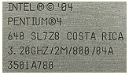
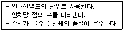
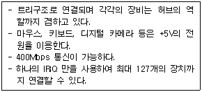
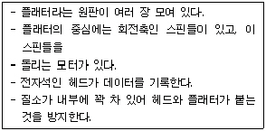

PC정비사-1급 (2008-09-28 기출문제)
1과목: PC운영체제
1. 네트워크 그룹 상에 표시되는 컴퓨터 이름을 변경할 때 가장 올바른 것은?
- [네트워크 환경] - [등록 정보]
- [내 컴퓨터] - [시스템 등록 정보]
- [제어판] - [로컬사용자 및 그룹]
- [작업 표시줄] - [등록 정보]
(정답률: 74%)

2. 인터넷 특정 웹 사이트에 접속하기 위해 연결을 시도하면 시간이 너무 오래 걸리거나 페이지를 찾을 수 없다는 메시지가 나타난다. 해당 사이트로 접속하기 위해 경유하는 경로와 상태를 확인하기 위해 사용할 수 있는 콘솔 명령어는?
- Ping
- Tracert
- Winipcfg
- Ipconfig
(정답률: 70%)
3. Windows XP에서 레지스트리 편집을 위해 실행 창에서 입력해야하는 명령은?
- Regedit
- Registry
- Register
- Registershow
(정답률: 79%)
4. Windows XP 탐색기에서는 표시되지 않지만, 공유 창을 통해서만 확인이 되는 특수 공유 폴더에 대한 설명으로 잘못된 것은?
- drive letter$ - 관리자가 드라이브의 루트 디렉토리에 연결할수 있게 한다.
- ADMIN$ - 자원의 경로는 항상 "C:\"를 가리킨다.
- IPC$ - 컴퓨터를 원격지에서 접근할 때 컴퓨터에서 사용하는 공유자원을 확인한다.
- PRINT$ - 프린터 공유를 위해 사용된다.
(정답률: 75%)
5. 운영체제의 주된 기능이 아닌 것은?
- 컴퓨터 시스템의 초기화 기능
- 데이터 정의 기능
- 효율적인 자원관리 기능
- 효율적인 자원할당 기능
(정답률: 69%)
6. 파일 할당 테이블(FAT)을 틀리게 설명한 것은?
- [FAT12] - MS-DOS 초기부터 주로 쓰였으며, 플로피디스크에서는 여전히 이용된다.
- [FAT16] - 32메가바이트 이상의 하드디스크를 지원하기 위해 MS-DOS 3.0과 함께 나왔으며, Windows 95까지 주로 이용되었다. 최대 2기가바이트 파티션을 지원한다.
- [FAT32] - 2기가바이트 이상의 하드디스크를 지원하며, Windows 95 OSR2부터 이 파일 시스템을 사용할 수 있다
- [exFAT] - Windows Vista 서비스팩1, Windows 임베디드 CE 6.0부터 지원하고, FAT16의 한계를 극복하고자 개발되었다.
(정답률: 77%)
7. Windows XP는 무인설치가 가능하다. 이때 필요로 하는 파일은?
- Nopersys.ini
- Unattend.ini
- Unattend.txt
- Nopersys.txt
(정답률: 50%)
8. Windows에서 파일을 삭제할 때 휴지통에 저장하지 않고 직접 삭제하는 방법은?
- [Ctrl]+[Delete]
- [Shift]+[Delete]
- [Ctrl]+[Shift]+[Delete]
- [Ctrl]+[Tab]+[Delete]
(정답률: 69%)
9. Windows XP Professional은 개인 홈페이지 등의 소규모 웹서버를 운영할 수 있도록 인터넷정보서비스(IIS) 프로그램이 지원된다. 몇 명 정도의 접속 제한을 두는가?
- 10~40
- 100~150
- 150~200
- 200~250
(정답률: 59%)
10. Windows XP의 모든 기능을 활용할 수 있는 파일 시스템은?
- EXT2
- FAT16
- FAT32
- NTFS
(정답률: 74%)
11. Windows XP의 MMC는 관리 도구를 모아둔 것이다. 다음 중 MMC 관리에 속하지 않는 것은?
- 장치 관리자
- 로컬 사용자 및 그룹
- 디스크 관리
- 메모리 관리
(정답률: 72%)
12. Windows XP에서는 시스템 발생오류, 보안감사 등을 기록으로 남기고 있다. 이러한 기록들을 확인하기 위한 메뉴는?
- 로컬 보안 정책
- ODBC
- 이벤트 뷰어
- 구성요소 서비스
(정답률: 95%)
13. [제어판] - [프로그램 추가/제거]에서 프로그램 제거를 했음에도 프로그램 이름이 지워지지 않고 남아 있다. 이 이름을 제거하려면 레지스트리내의 어느 항목을 제거해야 하는가? (단, 제거하고자 하는 이름은 ICQA이다.)
- HKEY_LOCAL_MACHINE\SOFTWARE\Microsoft\Windows\CurrentVersion\Uninstall\ICQA
- HKEY_USERS\Software\Microsoft\Windows\CurrentVersion\Uninstall\ICQA
- HKEY_CURRENT_USER\SOFTWARE\Microsoft\Windows\CurrentVersion\Uninstall\ICQA
- HKEY_CURRENT_CONFIG\Software\Microsoft\Windows\CurrentVersion\Uninstall\ICQA
(정답률: 66%)
14. 전자메일 프로그램에서 다른 사람에게도 복사본을 전하려고 할 때 작성해야 하는 부분은?
- bcc
- Forward
- REPLY-TO
- CC
(정답률: 59%)
15. Outlook Express를 이용하여 전자우편 편지를 보냈으나 반송되었다. 그 원인으로 볼 수 없는 것은?
- 상대방의 주소를 잘못 입력했다.
- 수신자가 송신자의 메일을 수신거부로 등록해 두었다.
- 수신자의 메일 서버가 다운되었다.
- 수신자의 메일 서버로부터 수신자가 편지를 가져오는 도중 통신오류가 발생했다.
(정답률: 66%)
2과목: PC주변기기
16. SCSI 어댑터를 살펴보았더니 PCI 방식에 내장형 50핀, 외장형 50핀 커넥터가 달려있다. 이 어댑터가 지원하는 SCSI 규격과 연결할 수 있는 주변기기의 개수는?
- Ultra Wide - 15개
- Ultra - 7개
- Ultra Wide - 10개
- Ultra - 15개
(정답률: 64%)
17. L2 캐시에 대한 설명으로 잘못된 것은?

- CPU와 주기억 장치간의 데이터 병목 현상을 줄이기 위해 사용된다.
- 일반적으로 L2 캐시의 용량이 작을수록 컴퓨터의 수행 속도는 빨라진다.
- Pentium Pro 부터는 CPU 내에 포함되어 제공한다.
- 일반적으로 CPU 다음으로 빠른 속도의 SRAM을 사용한다.
(정답률: 78%)
18. 사운드의 대표적인 저장 방식으로 .Wav를 많이 사용하고 있다. .Wav가 사용하는 음원 방식은?
- AM
- PCM
- FM
- MIDI
(정답률: 52%)
19. 다음은 어떤 단위에 대한 설명인가?

- CPS
- DPI
- PPM
- LPM
(정답률: 63%)
20. 키보드 내의 박막들 사이에서, 키를 누르는 물리적인 힘에 의해 접점이 붙어 도전이 되면, 어떤 키에 대응되는 접점에서 도전이 되었는지를 확인하는 역할을 하는 것은 무엇인가?
- PCB
- 로직 보드
- Membrane
- Bus
(정답률: 58%)
21. 다음에서 설명하는 장치는?

- SCSI
- USB 2.0
- IDE
- AMR Modem
(정답률: 82%)
22. 디지털 카메라를 구성하는 요소 중 CCD(Charge Coupled Device)의 설명으로 올바른 것은?
- 어두운 곳에서 촬영할 때 빛을 발광하여 사진을 찍을 수 있게 하는 장치
- 셔터속도와 연속촬영을 제어하는 장치
- Preview나 Review용도로 사용하는 액정화면
- 빛의 신호를 전기적 신호로 변환시키는 기능을 가진 장치
(정답률: 59%)
23. A교수는 학생들에게 리포트로 홈페이지를 작성하여 CD-ROM에 담아 제출하도록 하였다. 그 결과 CD 1장에 대부분 10MB정도의 데이터가 있어 CD의 공간 낭비가 무척 심하였다. 이러한 문제점을 해결하기 위한 올바른 방법은?
- 멀티세션방식으로 저장
- 불가능 하다.
- 버퍼를 증가시켜 DAO를 증가시킨다.
- TCO를 지우고 다시 레코딩 한다.
(정답률: 83%)
24. SCSI 하드디스크를 연결하는 방법에 대한 설명으로 옳지 않은 것은?
- SCSI BUS에 연결되는 기기 중 마지막으로 연결되는 기기는 저항을 반드시 종단(Terminated)하여야한다.
- 케이블 연결방법은 EIDE와 동일하지만 Master, Slave 점퍼 설정이 제공되지 않는다.
- 스카시 주변기기는 모두 ID번호를 가지게 되며, 이 번호는 주변장치에서 점퍼를 이용하여 설정할 수 있다.
- 하드디스크와 같이 속도가 빠른 장치는 높은 번호를 지정한다.
(정답률: 74%)
25. 비디오 카드를 구성하는 요소가 아닌 것은?
- 커넥터
- 비디오 램
- DAC
- LCD
(정답률: 78%)
26. 동영상 기술인 MPEG(Moving Pictures Expert Group)에 대한 설명으로 옳지 않은 것은?
- MPEG는 1998년 ISO 및 IEC 산하에서 멀티미디어 표준의 개발을 목적으로 설립된 동화상 전문가 그룹이다.
- ITU 산하의 VCEG와 함께 H.264/AVC 표준을 공동 제정하고있다.
- MPEG는 손실 압축 방법을 사용하며 JPEG의 압축 기술인 영상의 중복성을 제거하는 방법을 사용한다.
- MPEG-4는 MPEG-3을 더욱 개선시킨 기술로 전화선을 이용한 화상회의 시스템과 동영상 데이터 전송 목적으로 사용된다.
(정답률: 53%)
27. CD-ROM 드라이브는 배속과 전송속도(KB/sec)에 따라 데이터의 전송능력이 달라진다. 다음 중 배속과 전송속도의 표현이 잘못 연결된 것은?
- 8배속-1,200[KB/sec]
- 10배속-1,500[KB/sec]
- 24배속-3,200[KB/sec]
- 32배속-4,800[KB/sec]
(정답률: 71%)
28. DVD에 대한 설명으로 옳지 않은 것은?
- MPEG-1 방식으로 동영상이 압축되어 있다.
- DVD 1매의 기록 용량은 일반 CD의 6~8배 정도이다.
- DVD는 CD와 같은 12cm의 크기를 가진다.
- 돌비 디지털 서라운드와 멀티 앵글 기능을 지원한다.
(정답률: 78%)
29. 3벌식 자판에 대한 설명 중 잘못된 것은?
- 현재 국가 표준으로 공인되어 있다.
- 한글 구현 원리를 충실히 따르고 있다.
- 2벌식에 비해 왼손이 덜 피로하다.
- 현대어에서 사용하는 모든 겹받침은 키를 누른 상태에서 1타에 입력할 수 있다.
(정답률: 72%)
30. 다음에 설명하는 컴퓨터 부품은?

- CD-ROM 드라이브
- 하드디스크 드라이브
- 플로피디스크 드라이브
- CD-RW 드라이브
(정답률: 78%)
3과목: 디지털 논리회로
31. 다이오드에 관한 설명 중 옳지 않은 것은?
- 한쪽 방향으로만 전류가 흐른다.
- 교류를 직류로 변환시키는 역할을 한다.
- 복조파에 실려 있는 신호파형을 축출하는 것을 검파 다이오드라고 한다.
- 제너 다이오드는 역방향 전류가 가해졌을 때 전압 변동이 크다.
(정답률: 81%)
32. 2개의 입력 A, B를 갖는 Nand Gate를 이용하여 Not Gate로 사용하려 할때의 연결방법은?
- A, B 모두를 OPEN
- A와 B를 연결시킨 후, A나 B 중 한곳에 입력 신호를 인가
- A를 접지시키고, B에 입력 신호를 인가
- A를 1로 고정시킨 후 B에 입력 신호를 인가
(정답률: 46%)
33. 입력이 16 개인 Decoder 의 출력 개수는?
- 3
- 4
- 2에 16승
- 0
(정답률: 60%)
34. 소자 중에서 데이터의 보존 기능을 갖는 것은?
- AND GATE
- EX-OR GATE
- OR GATE
- FLIP FLOP
(정답률: 79%)
35. Access Time이 가장 빠른 기억 장치는?
- Magnetic Drum
- Static RAM
- Magnetic Disk
- Magnetic Tape
(정답률: 80%)
4과목: PC유지보수
36. CD 레코딩 중에 "Buffer Underrun Error" 메시지가 출력되었을 때 가장 올바른 대처 방법은?
- CD 레코더의 렌즈에 이상이 있을 경우 발생할 수 있으므로, 렌즈를 교체한다.
- CPU나 HDD의 전송속도가 너무 느릴 경우 발생할 수 있으므로, 레코딩 속도를 낮춘다.
- CD 레코더 프로그램이 잘못 설치되어 나타나는 현상이므로, 프로그램을 다시 설치한다.
- CD 레코더의 속도가 너무 느려서 나타나는 에러이므로, 레코더를 더 빠른 제품으로 교환한다.
(정답률: 74%)
37. 메모리에 대한 설명 중 잘못된 것은?
- RDRAM은 짝수개로 장착을 하여야 한다.
- DDR 메모리 PC2100과 PC2700 메모리를 혼용시, 메모리속도가 낮은 PC2100으로 작동한다.
- SDRAM은 슬롯 규격이 맞는다면, 빈 메모리 슬롯 아무 곳에나 장착이 가능하다.
- DDR-SDRAM은 슬롯 규격이 맞아도, 메모리 슬롯 중 지정된 위치에 장착을 하여야 한다.
(정답률: 50%)
38. Windows 사용 중 치명적인 오류가 불규칙적으로 발생한다. 이러한 현상은 특정 프로그램을 실행할 뿐 아니라 광범위하게 발생한다. 이에 대한 일반적인 원인으로 잘못된 것은?
- 파티션 설정이 잘못되었다.
- 중요한 H/W 또는 S/W와 Windows의 호환성 문제이다.
- Windows의 시스템 정보 파일에 오류가 발생하였다.
- 중요 드라이버 파일에 오류가 발생하였다.
(정답률: 84%)
39. Windows XP 설치를 위하여 USB메모리로 부팅할 경우 조정해야하는 BIOS SETUP 메뉴는?
- Boot Sequence
- Quick Power On Self Test
- Boot Virus Detection
- Plug & Play O/S
(정답률: 83%)
40. 부팅 과정에 만날 수 있는 에러메시지와 확인해야할 점검 사항이다. 잘못 연결된 것은?
- BIOS ROM Checksum Error - CPU의 계산 오류로 나올 수 있으므로 CPU가 제대로 장착되어 있는지 확인한다.
- Drive Not Ready Error - 새로 장착한 하드디스크의 영역 분할정보가 없는 경우 Fdisk를 실행한다.
- Hard Disk Controller Failure - 하드디스크의 데이터 케이블이 메인보드에 제대로 연결되어 있는지 확인한다.
- Keyboard Error or No Keyboard Present - 컴퓨터 본체에 Keyboard가 제대로 연결되어 있는지 확인한다.
(정답률: 71%)
41. 하드웨어 디바이스나 드라이버를 확장할 때 사용자의 편의를 돕기 위해 사용자가 설정할 필요 없이 운영체제가 자동으로 설정해주는 기능은?
- 멀티태스킹
- 스풀링
- 플러그 앤 플레이
- 일괄처리
(정답률: 80%)
42. 컴퓨터에 이상이 발생했을 때의 조치 사항으로 올바른 것은?
- 컴퓨터에 바이러스가 감염된 경우에는 백신으로 감염된 파일을 확인한 후 반드시 모두 삭제하여야 한다.
- 애드웨어나 악성코드에 감염된 경우는 인터넷 익스플로러를 제거 후 다시 설치한다.
- Windows에 문제가 생기면 재설치하기 전에 우선 손상된 파일복구 기능을 이용해서 복구를 시도해 본다.
- 레지스트리에 문제가 발생하게 되면 Windows를 재설치하는 방법으로만 복구가 가능하다.
(정답률: 70%)
43. 모니터 화면이 갑자기 심하게 떨리는 현상이 발생했다. 단 DOS 모드에서는 화면 떨림 현상이 발생되지 않는다. 이때 수리 방법으로 가장 적절한 것은?
- 마우스를 제거한 후 프로그램을 재설치 한다.
- Windows에서 VGA드라이버를 재설정해 준다.
- 사운드 카드와 충돌이 나는 것이므로 사운드 카드를 제거한다.
- I/O 카드를 교체한다.
(정답률: 83%)
44. POST 과정의 순서가 바르게 나열된 것은?
- 시스템 버스 테스트 - 그래픽 카드 테스트 - 메모리 테스트 - 키보드 테스트 - 디스크 테스트 - P&P 기능 동작 - CMOS 내용확인 - DMI 기능 동작
- DMI 기능 동작 - 그래픽 카드 테스트 - 메모리 테스트 - 키보드 테스트 - 디스크 테스트 - P&P 기능 동작 - CMOS 내용확인 - 시스템 버스 테스트
- 시스템 버스 테스트 - P&P 기능 동작 - 메모리 테스트 - 키보드 테스트 - 디스크 테스트 - 그래픽 카드 테스트 - CMOS 내용확인 - DMI 기능 동작
- 시스템 버스 테스트 - CMOS 내용확인 - 그래픽 카드 테스트 - 메모리 테스트 - 키보드 테스트 - P&P 기능 동작 - 디스크 테스트 - DMI 기능 동작
(정답률: 77%)
45. Over Clocking에 대한 설명 중 잘못된 것은?
- Over Clocking을 하는 방법은 클럭 배수와 외부 클럭을 조정하는 두 가지 방법이 있다.
- CPU의 Over Clocking은 CPU의 성능을 향상시키고, CPU의 수명을 연장시킨다.
- 메인보드에서 지원하는 클럭 수 까지만 오버 클럭킹이 가능하다.
- CPU의 작동 클럭은 클럭 배수와 외부 클럭의 곱에 의해 결정된다.
(정답률: 79%)
46. 잉크젯프린터를 이용하여 인쇄하는 도중 줄이 심하게 가서 작은 글자가 거의 알아 볼 수 없을 때, 적당한 수리 방법은?
- 알콜을 면봉에 바른 다음 노즐과 센서 부분을 닦아준다.
- 윤활유를 이용하여 프린터 헤드를 청소해 준다.
- 프린터 연결 케이블을 교체한다.
- 프린터 드라이버를 교체한다.
(정답률: 86%)
47. 그래픽카드는 모니터에 나타낼 신호를 출력해주는 장치이다. 그래픽카드 선택시 유의 사항으로 잘못된 것은?
- 파워 서플라이용 그래픽 카드 소모 전력량을 충분히 고려한다.
- 메인보드에서 지원하는 슬롯 규격을 확인하여 올바른 것을 선택한다.
- 처리속도가 빠른 것을 선택한다.
- 프레임 버퍼(메모리)는 작은 것을 선택한다.
(정답률: 90%)
48. BIOS Setup의 기능으로 잘못된 것은?
- 입출력 데이터의 처리 및 연산기능 수행
- 메인보드의 성능과 기능을 제어
- 컴퓨터의 부팅과 하드웨어를 제어
- 컴퓨터에 장착된 장치를 인식하고 관리
(정답률: 91%)
49. PnP장치가 관리하지 않는 것은?
- DMA 채널
- TCP/IP
- IRQ
- 입출력 Address
(정답률: 70%)
50. 사용중인 장비의 전원을 끄지 않은 상태에서 하드디스크나 심지어 전원을 교체해도 시스템에서 바로 인식하는 기술로 PnP의 발전된 형태라 할 수 있는 것은?
- Hot Swap
- SCSI
- PCI
- ACI
(정답률: 91%)
5과목: PC네트워크
51. LAN 구간에서 현재 서버와 클라이언트간의 통신이 정상적으로 이루어지는지 확인하고 싶을 때 사용할 수 있는 방법으로 잘못된 것은?
- ipconfig 명령어를 사용해 확인한다.
- ping 명령어를 사용해 확인한다.
- 실행메뉴에서 "￦￦서버_이름" 으로 검색한다.
- 네트워크 환경에서 서버를 검색한다.
(정답률: 64%)
52. 응용 계층에서 성격이 서로 다른 네트워크를 상호 변환하여 정보를 주고받기 위해 사용되는 장치는?
- Repeater
- Bridge
- Gateway
- Hub
(정답률: 79%)
53. 인터넷 계층의 일부로서 제어 기능 및 오류 보고를 수행하는 기능은?
- TCP/IP
- BGP
- ARP
- ICMP
(정답률: 56%)
54. OSI 계층모델의 Physical Layer에서 사용되는 장비는?
- Bridge
- Repeater
- Gateway
- Router
(정답률: 56%)
55. NetBIOS에서 제공하는 기본 서비스가 아닌 것은?
- Routing Service
- Datagram Service
- Session Service
- Naming Service
(정답률: 48%)
56. VPN을 위한 대표적 터널링 프로토콜이 아닌 것은?
- PPTP
- DES
- L2TP
- IPSec
(정답률: 53%)
57. 인터넷에서 전자우편을 사용하기 위해 반드시 설정해야 하는 서버의 종류는?
- IMAP, SNMP
- SMTP, NNTP
- POP, SMTP
- POP, NNTP
(정답률: 85%)
58. Router에 대한 설명과 거리가 먼 것은?
- 동일한 전송 프로토콜을 사용하는 분리된 네트워크를 연결해 준다.
- 알고리즘에 따라 자동으로 경로가 결정된다.
- 메시지 형식 변화, 문자코드 변환, 주소 변환 등의 기능을 한다.
- 여러 경로 중 가장 효율적인 경로를 선택하여 패킷을 보낸다.
(정답률: 74%)
59. 인터넷에서 외부로부터 불법 침입을 막고 접근 통제를 주된 목적으로 설치되는 장비는?
- Firewall
- Proxy Server
- File Server
- Gateway
(정답률: 82%)
60. 인터넷 프로토콜인 IPv4, IPv6 의 목적지 주소를 나타내는 비트수는?( x, y에서 x는 IPv4, y 는 IPv6 의 비트수를 의미함. )
- x=16, y=64
- x=32, y=64
- x=32, y=128
- x=16, y=128
(정답률: 56%)